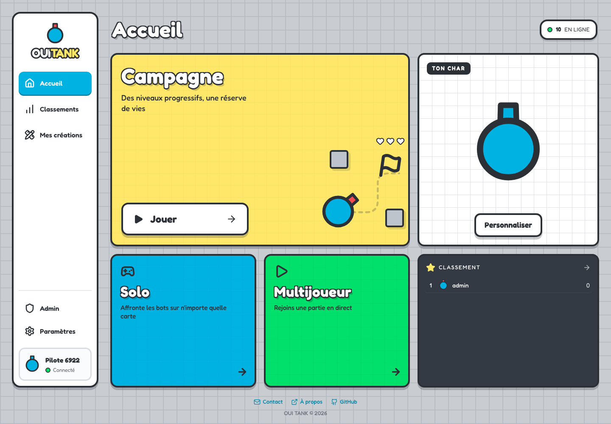
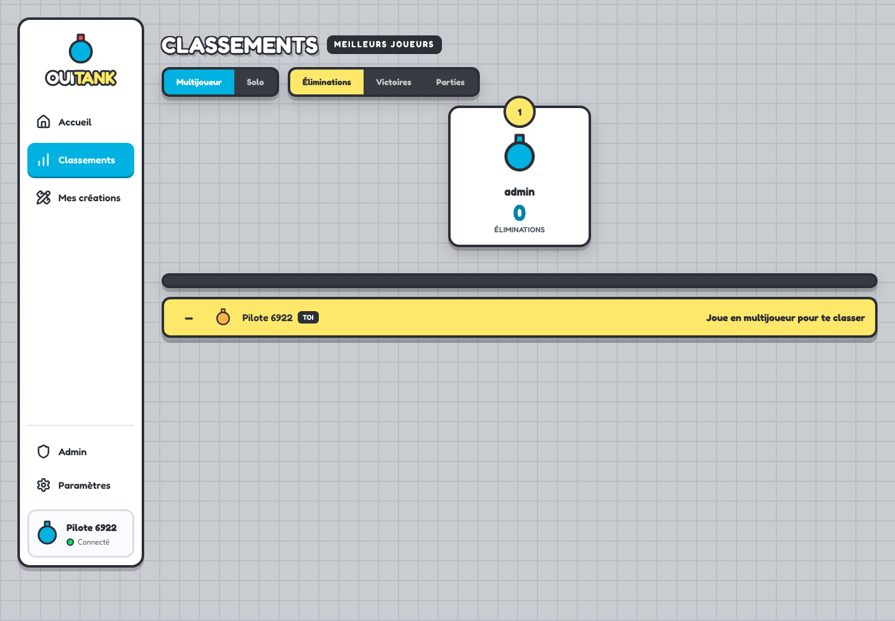
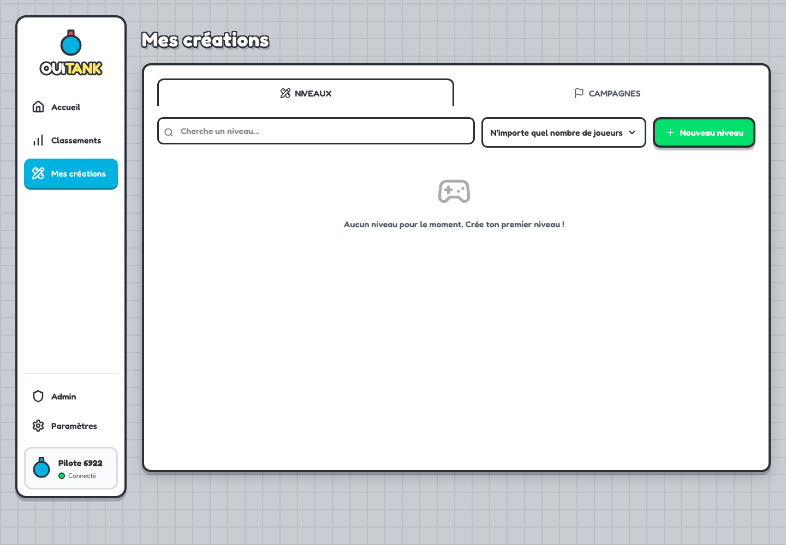
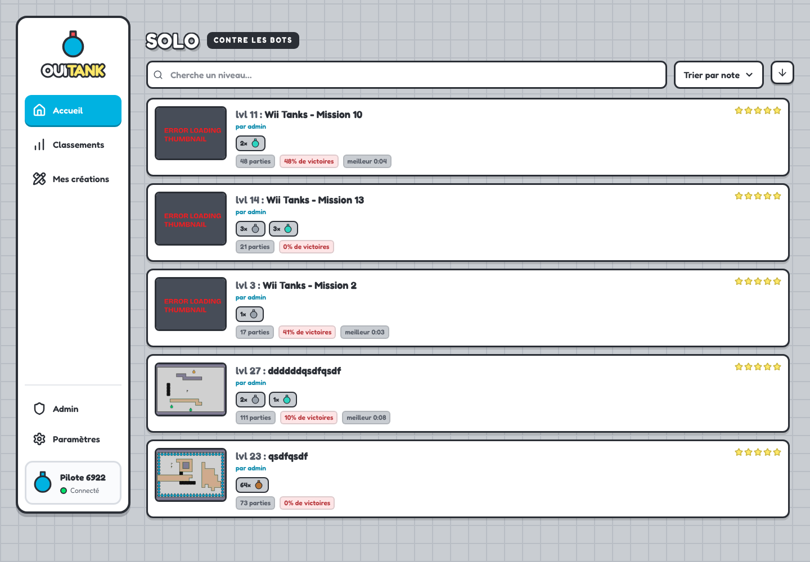
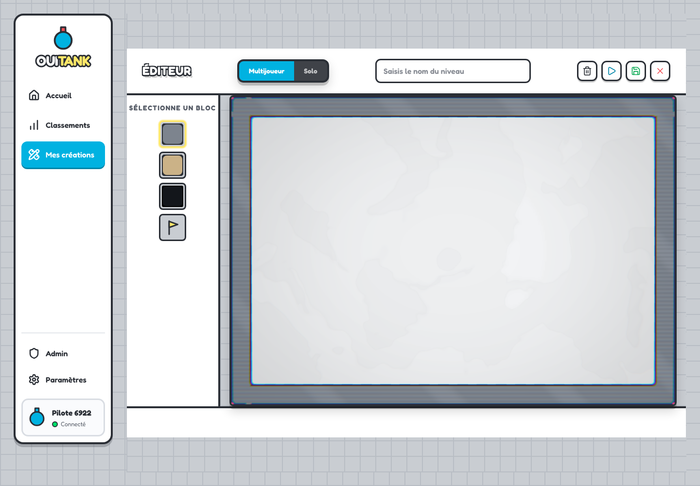
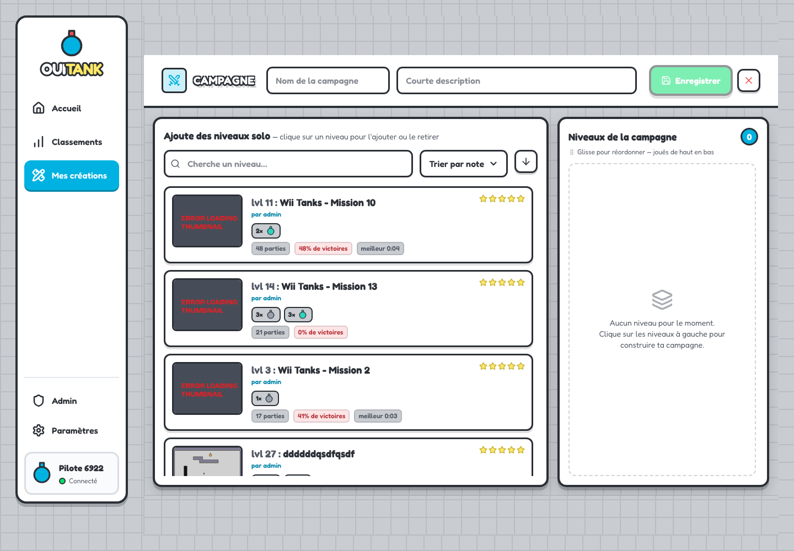
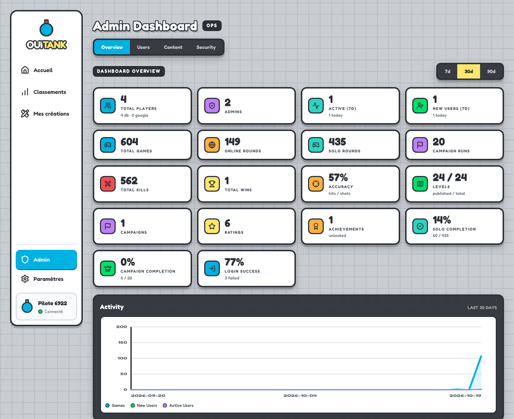
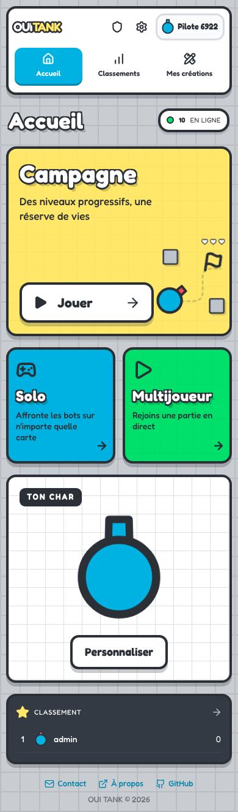

Accroches retirées ; descriptions des modes conservées. Footer centré en
bas.

Même menu de 204 × 886 px à cette taille d’écran (1440 × 1000).

Même menu et titre sans sous-titre superflu.

Navigation de mêmes dimensions que sur l’accueil.

Navigation de mêmes dimensions que sur l’accueil.

Navigation de mêmes dimensions que sur l’accueil.

Navigation de mêmes dimensions que sur l’accueil.

Navigation compacte commune à toutes les pages.